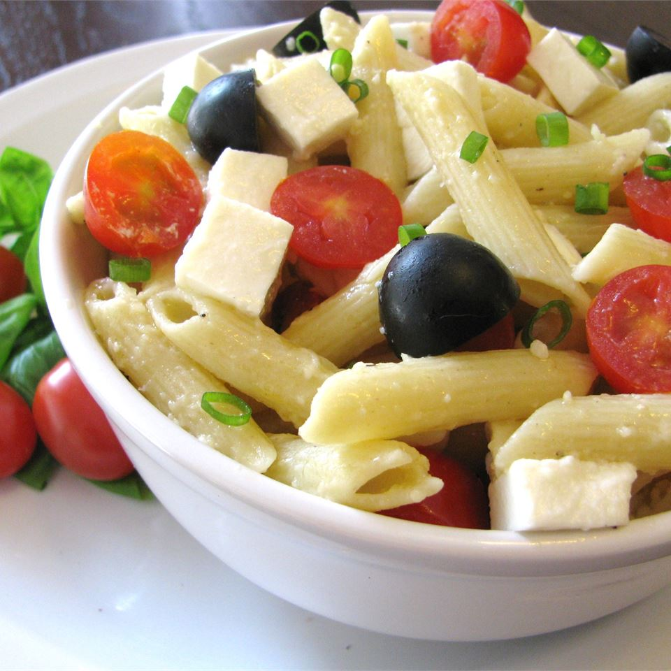

Penne, Tomato, and Mozzarella Salad
Garden fresh basil and summer sweet cherry tomatoes make this pasta salad a warm season favorite. Takes only a few minutes to put together, a quick summertime meal.
Ingredients
- 1 (12 ounce) package penne pasta
- ¼ cup olive oil
- 1 bunch green onions, chopped
- 1 clove garlic, minced
- 1 cup quartered cherry tomatoes
- salt and pepper to taste
- 5 ounces mozzarella cheese, diced
- ½ cup grated Parmesan cheese
- 4 ounces fresh basil
- 12 large black olives, halved
Steps
- Cook pasta in a large pot of boiling salted water as directed on package, until just tender. Drain, and set aside.
- Heat olive oil in a small saucepan. Add green onions and cook, stirring occasionally, 2 or 3 minutes. Stir in garlic, and cook for 2 minutes. Add pasta, tomatoes, salt, and pepper. Cook over low heat to warm through. Stir in mozzarella and Parmesan cheese. Coarsely tear basil leaves in halves or thirds; add to pasta with olives, and serve immediately.